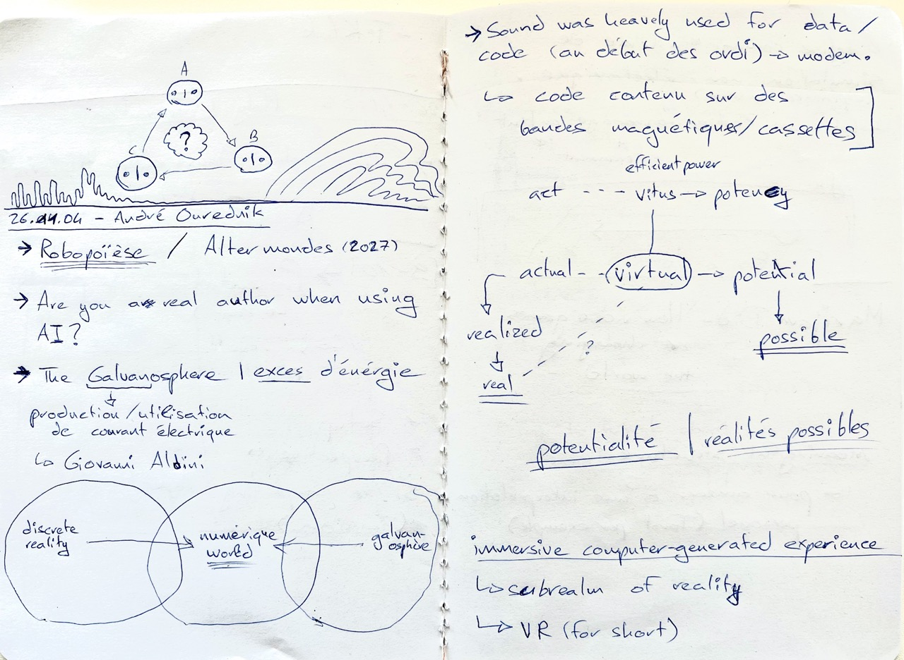
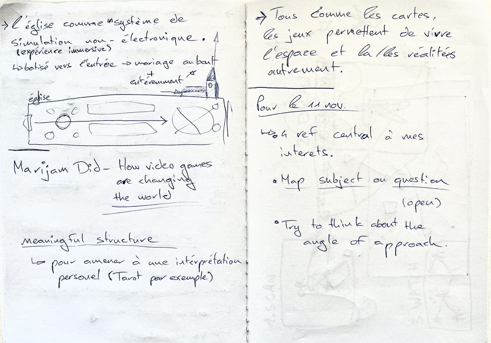

4 novembre 2026
𖨠 26.11.04 - André Ourednik 𖨠
Alterated Realities and Real Alternatives


Exercice - october 26
- I am interested in exploring Sound / Music produce with machine (in the broad sense of the term).
- The context, community, place, material or practice I want to engage with is Music Production / Sound Design / Machines / Low Tech.
- I am curious about the relationship, contradiction or tension between The Machine and Sound.
- I think this matters because Sound is an aspect often considered secondary within digital spaces.
- I could investigate this by observing artists - plugins - video games, speaking with people who produce sound on a computer, collecting or documenting the various facets of using sound within digital spaces, or making/prototyping a VST ? a website ?.
- This could help me understand the importance of sound within digital spaces – why use sound in a space that does not inherently require it?.
- My first small experiment could be A fictional forum centered on sound
Assignment - november 11
4 Key references:
Map your subject
Angle of approach
I am not entirely sure about my approach at this stage. I would like to develop a scientific and theoretical investigation into my subject, while remaining equally interested in exploring its poetic dimension. Perhaps there is a way to bring these two approaches together?
State of the art
- A list of sources / references.
- A map of theories, projects, practice, methods, (...) that already exists aroud your topic
- Don’t hesitate to include a diverse range of references — there’s no need to limit yourself to the field of design.
- It is a way of acting as a curator within the subject matter, in order to take a stance regarding that subject. Ask yourself: where can I make a contribution ?
- The more you focus on something specific (by setting limits), the more the subject will open up.
- If my topic is too broad, I should ask myself: which aspect of this topic interests me? How do I wish to approach it? What do I want to learn? ...
- Consider the question of the angle of approach: critical? scientific? poetic? (...)
- It’s a good idea to create lists (Arena), but it is extremely important to ask yourself: why does this particular item interest me?
- Identifying the vocabulary and terms related to my topic will help me be specific in my research.
- As you make new discoveries, it is a good idea to document the origins of your references (for your bibliography).